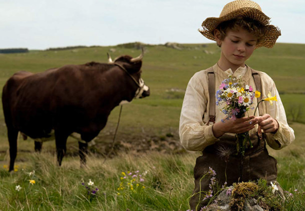
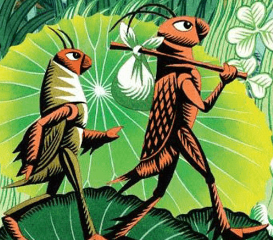
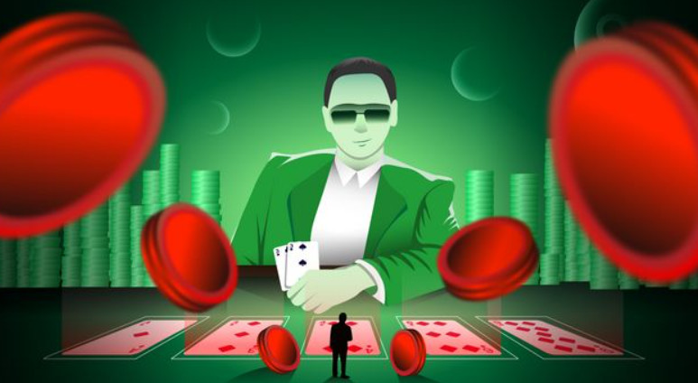
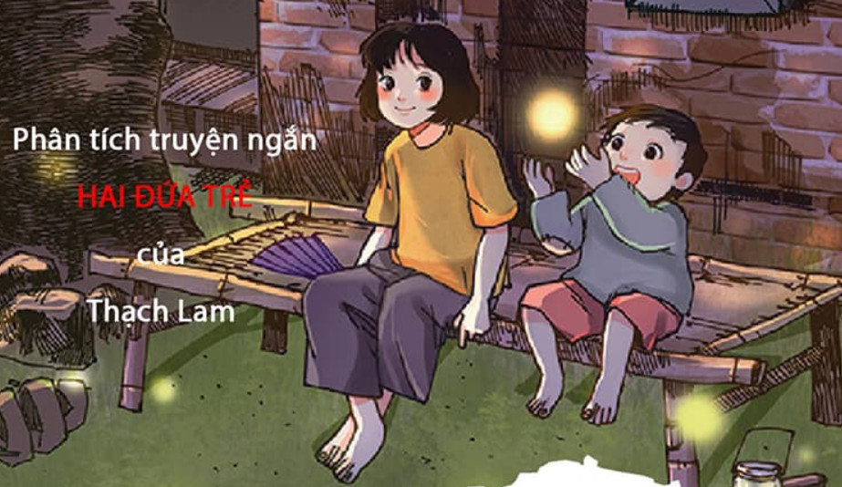

Nhưng dù ở đâu, trong cảnh ngộ nào, em vẫn noi theo nếp rèn dạy của ông già Vitali giữ phẩm chất làm người, nghĩa là ngay thẳng, gan dạ, tự trọng, thương người, ham lao động, không ngửa tay xin xỏ, không dối trá, gian giảo, nhớ ơn nghĩa, luôn luôn muốn làm người có ích...
Tác giả: Hector Malot

Tôi hỏi Dế Mèn :
- Anh đã đi nhiều thế anh học được điều gì ?
Dế Mèn đáp :
- Nhiều lắm chứ. Tục ngữ có câu : Đi một ngày đàng học một sàng khôn cơ mà. Trái đất như quyển sách hay, ai chịu khó xem xét và suy nghĩ đều học được những điều bổ ích.
Các bạn thành phố cửa biển Hải Phòng ! Các bạn Sô-phi-a ! Các bạn ở phía nam đất nước !.... Câu nói ấy của Dế Mèn, xin gửi bạn.
Tác giả: Tô Hoài

Hắn lắc đầu:
- Không được! Ai cho tao lương thiện? Làm thế nào cho mất được những vết mảnh chai trên mặt này? Tao không thể là người lương thiện nữa. Biết không? Chỉ có một cách... biết không! Chỉ có một cách là... cái này biết không?
Tác giả: Nam Cao

Ván bài lật ngửa phản ánh một trong vô số khía cạnh phong phú của cuộc đấu tranh giữa một thời điểm hết sức tế nhị của đất nước: sau hiệp định Genève. Câu chuyện có diễn biến nhanh, cách viết thông minh, lôi cuốn, lời thoại sắc sảo, Ván bài lật ngửa vừa tái hiện một cách sống động lịch sử, đồng thời mang lịch sử đến với người đọc một cách tinh tế, chân thực, gần gũi.
Tác giả: Trần Bạch Đằng

- Dậy đi, An. Tàu đến rồi.
An nhỏm dậy, lấy tay dụi mắt cho tỉnh hẳn. Hai chị em nghe thấy tiếng dồn dập, tiếng xe rít mạnh vào ghi. Một làn khói bừng sáng trắng lên đằng xa, tiếp đến tiếng hành khách ồn ào khe khẽ. Mấy năm nay buôn bán kém nên người lên xuống ít, có khi hai chị em đợi chờ chẳng thấy ai. Trước kia, ở sân ga, có mấy hàng cơm mở đón khách, đèn sáng cho đến nửa đêm. Nhưng bây giờ họ đóng cửa cả rồi, cũng im lặng tối đen như ngoài phố.
Tác giả: Thạch Lam
